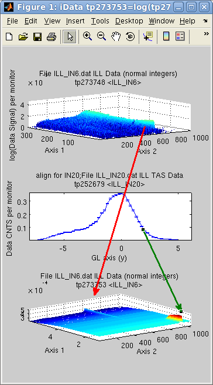
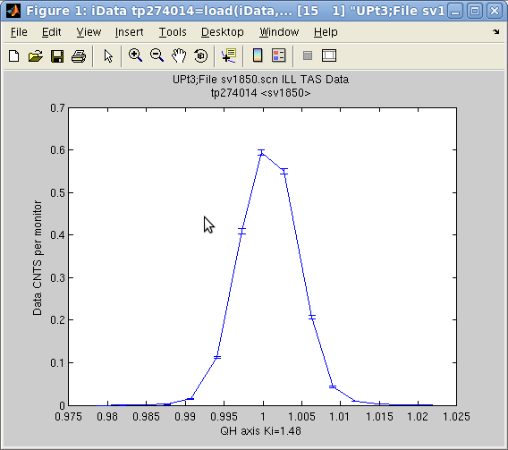
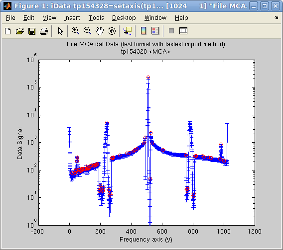
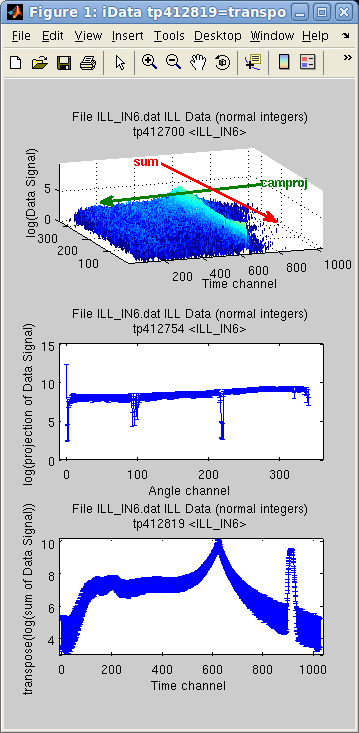
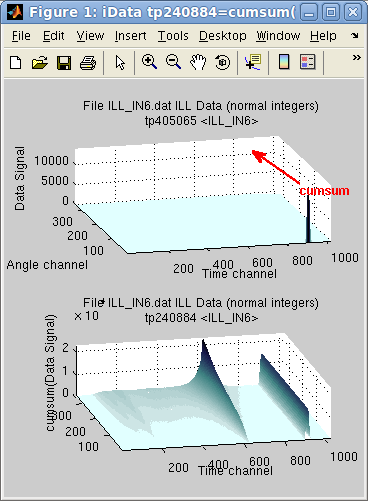
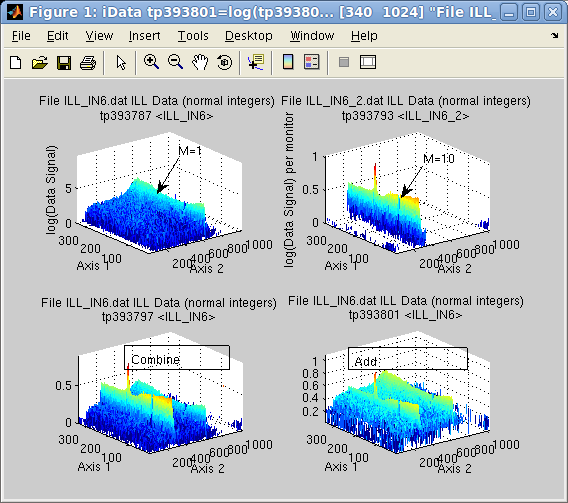
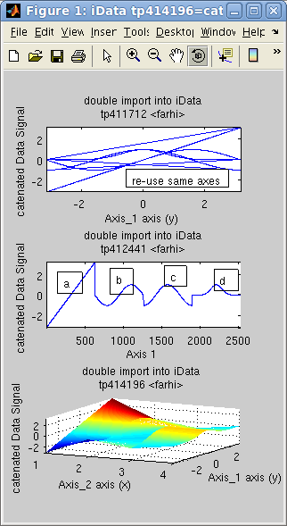
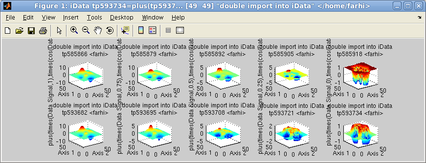
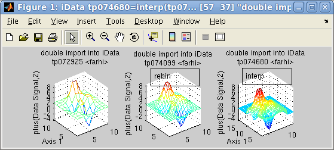

iFit: Mathematical operators
- A reminder on axes,
monitors and signal errors
- Unary operators
- Binary operators
- Statistics, fitting and peak
searching
- Projection, integration and sum
- Merging and combining
data sets
- Appending and slicing
data sets
- Creating arrays of objects
- Interpolation, intersection and union
Commands we use in this page:
iData, maths,
methods
A reminder on axes,
monitors and signal errors
The iData objects have been designed keeping in mind that any
measurement Signal is
recorded as a function of Axes
(e.g. time, energy, ...) and corresponds to a measurement quantity
(e.g. flux, integrated time for the measurement, ...), which we label
as a Monitor. In addition,
the Signal is attached to an uncertainty Error, which provides a
measurement of the accuracy of the Signal. You may get more details
about these definitions in the iData object
description page. Remember that axis of rank 1 is usually associated to
Y (vertical, along rows), whereas axis of rank 2 is associated to X
(horizontal, along columns).
The way all of these are used is listed below:
- All mathematical methods propagate the Error together with the Signal, assuming Error
distributions are Gaussian. The sections below detail the way Errors
are propagated.
- Binary operators use the Monitor
value to weight the respective ratio when performing the operation. The
Monitor value is also
affected by Matematical operations that renormalize the Signal. The Monitor is usually a value larger
than 1.
- The Axes are used in
binary operators to determine intersection of Signal ranges. A rebinning of
objects is automatically performed when the Axes sampling do not match.
Unary operators
All unary operators apply on a single object, element-by-element.
| Operator |
new
Signal
|
new
Error
|
new
Monitor
|
Comments
|
abs
|
| Signal |
|
|
|
Absolute value
|
acos
|
cos-1(Signal)
|
-Error/(√(1-Signal²))
|
|
Arc cosine. Signal should be
[-1:1]
|
asin
|
sin-1(Signal)
|
Error/(√(1-Signal²)) |
|
Arc sine. Signal should be [-1:1] |
atan
|
tan-1(Signal)
|
Error/(1+Signal²) |
|
Arc tangent.
|
cos
|
cos(Signal)
|
-Error*sin(Signal)
|
|
Cosine. Signal is in [rad]
|
sin
|
sin(Signal)
|
Error*cos(Signal)
|
|
Sine. Signal is in [rad] |
tan
|
tan(Signal)
|
Error/cos²(Signal)
|
|
Tangent. Signal is in [rad] |
exp
|
eSignal
|
Error*eSignal |
|
Exponential
|
log
|
ln(Signal)
|
Error/Signal
|
|
Logarithm (Neperian, base 2)
|
log10
|
log10(Signal)
|
Error/(ln(10)*Signal)
|
|
Logarithm (base 10) |
sqrt
|
√Signal |
Error/(2√Signal) |
√Monitor |
Square root
|
ctranspose and '
|
Signal'
|
Error'
|
Monitor' |
Complex conjugate transpose
|
transpose and .'
|
Signal.'
|
Error'
|
Monitor'
|
Non conjugate transpose
|
floor
|
floor(Signal)
|
floor(Error)
|
|
Round towards -∞ Make it integer.
|
| ceil |
ceil(Signal)
|
ceil(Error)
|
|
Round towards +∞ Make it integer. |
round
|
round(Signal)
|
round(Error)
|
|
Round towards nearest integer.
|
sign
|
sign(Signal)
|
0
|
|
Sign of Signal elements.
|
uminus and -
|
-Signal
|
|
|
Opposite
|
imag
|
ℑ(Signal)
|
|
|
Imaginary part
|
real
|
ℜ(Signal)
|
|
|
Real part
|
Here is an example using unary operators:
>> a = iData([ ifitpath 'Data/ILL_IN6.dat' ]);
>> b = [ log(a) floor(a) sqrt(a) ]
b = array [1 3] iData object:
Index [Tag] [Dimension] [Title] [Last command] [Label]
1 tp362134 [340 1024] 'File ILL_IN6.dat ILL Data (n...' tp362134=log(tp36213...
2 tp362140 [340 1024] 'File ILL_IN6.dat ILL Data (n...' tp362140=floor(tp362...
3 tp362145 [340 1024] 'File ILL_IN6.dat ILL Data (n...' tp362145=sqrt(tp3621...
The 1/Signal is obtained with
the binary operator division.
The sqr operator is a short
cut for power 2.
Binary operators
The binary operators take two objects, and perform a relational
operator, element-by-element. In the following we use the notations:
- s1, e1 and m1 are the Signal,
Error and Monitor of
the 1st object, resp.
- s2, e2 and m2 are the Signal,
Error and Monitor of
the 2nd object, resp.
- s3, e3 and m3 are the Signal,
Error and Monitor of
the resulting object, resp.
When not defined the Monitor
is set to 1, and the Error is
set to √Signal.
Operator
|
Signal
(s3)
|
Error
(e3)
|
Monitor
(m3)
|
Description
|
plus and +
|
m3*(s1/m1+s2/m2)
|
√[(e1/m1)²+(e2/m2)²]
|
m1+m2
|
addition
|
minus and -
|
m3*(s1/m1 - s2/m2) |
√[(e1/m1)²+(e2/m2)²] |
m1+m2 |
subtraction
|
times and .*
|
s1 * s2 |
s3*[(e1/s1)²+(e2/s2)²] |
m1*m2
|
multiplication (element by element)
|
| mtimes
and
* |
s1 x s2
|
e1 x e2
|
m1 x m2
|
matrix multiplication
|
divide and ./
|
m2²*(s1/s2) |
s3*[(e1/s1)²+(e2/s2)²] |
m1*m2 |
division (element by element) |
| mrdivide
and
/ |
see
above
|
see above |
see above |
matrix division: currently
equivalent to the divide
operator
|
combine and \
|
s1+s2
|
√[e1²+e2²] |
m1+m2
|
add Signals and Monitors
independently
|
power and ^
|
m3*(s1/m1)(s2/m2)
|
s3*[s2*e1/s1+e2*ln(s1)]
|
m1m2
|
exponentiation
|
comparisons:
lt, le, gt, ge, ne, eq
|
comparison(s1, s2)
|
√[(e1/m1)²+(e2/m2)²]/[s1/m1+s2/m2] |
1
|
binary comparisons
|
All these operations find intersection ∩ between objects (when axes are
e.g. partly overlapping),
rebin
objects when axes have a different sampling, and then perform the
mathematical operation. In case some objects have a lower
dimensionality,
they are extended along missing dimensions (by mere duplication) to
match the higher dimensionality, so
that the operation can be performed.
The
following
example
adds
a
2D
data
set
with
a
1D
data
set,
which
is
extended.
The
intersection
selects only the positive axis values from
the 1D object, here in [0 5]. As the 2D object has no default Monitor
(set to 1), we set it to 1/10 of the corresponding mean value in the 1D
object
(if not done so the IN6 data is under weighted compared with the IN20
data for which Monitor is high). The magenta and blue arrows indicate
how
the data is added, and the 1D data set extended along
the Axis 2. as shown with the
double arrow.
>> a = iData([ ifitpath 'Data/ILL_IN6.dat' ]);
>> b = iData([ ifitpath 'Data/ILL_IN20.dat' ]);
>> set(a,'Monitor', mean(b.Monitor)/10);
>> c = a+b;
>> subplot([ log(a) b log(c) ] ,'tight')
Warning: It
is
important
to
check
that
the
axes
and
Monitor
values
are
consistent
when
performing
binary
operations,
otherwise
the intersection may be
empty, or the corresponding Signal
weighting may be wrong.
The combine operation will be
detailed in the section 'Merging and combining
data sets' below. In particular, the difference between the
summation and the combination will be detailed there.
The usual comparison binary operators
- greater: gt >
- greater or equal: ge >=
- lower: lt <
- lower or equal: le <=
- equal: eq ==
- not equal: ne ~=
are also implemented. It compares the Signals, taking the Monitor
weightning into account. The associated error bar is normalized to the
mean signal.
Statistics, fitting and peak
searching
A few methods have been written to analyze the Signal from objects.
This includes peak searching, first and second moment distributions,
and model fitting.
Statistics
The usual min, max, mean, and median methods can be applied onto
iData objects, and return the corresponding statistics for the Signal.
The operation is performed for one given axis/dimension, e.g. along y,
x, z ...

The std method provides an
easy way to determine Gaussian widths of Signal distributions along
axes. It returns the half width and center of the Signal distribution.
>> a = iData([ ifitpath 'Data/sv1850.scn' ]);
>> [w,x]=std(a)
w =
0.0036
x =
1.0007
>> [ min(a) max(a) median(a) mean(a) ]
ans =
0 7387 119 1630.7
indicates that the Signal is
distributed in 1.0007 ± 0.0036, and gives min, max, ... As a
comparison, the fit to a Gaussian function returns
>> fits(a)
'Amplitude' 'Centre' 'HalfWidth' 'Background'
0.67857 1.0008 0.0034641 0.00024067
which is about the same as the 1st and 2nd moment estimates. Here, the Amplitude fit parameter is the one
for Signal/Monitor, which is
indeed different from the value returned by max when Monitor is not 1. Use setalias(object, 'Monitor',1) to
get similar values from fits
and max in this example.
These operators apply iteratively on object arrays. The mean and median then point to the combine operator, the min and max return the minimum and maximum
along all objects.
Peak searching and
model fitting
The peaks method makes an
automatic analysis of a vectorial Signal (that is projected along one
given dimension) of an object, and determines the underlying baseline
(background), apparent peak position and width, based on a shifting
Gaussian estimate [see Slavic, Nucl.
Inst. Meth. 112 (1973)
253 ; M. Morhac, Nucl. Inst. Meth.
A 600 (2009) 478].
This
method
works
remarkably
for
signals
with
sharp
peaks.
The
following
example
displays
the
automatically
found
peaks
on
top
of
the object view:
>> a = iData([ ifitpath 'Data/MCA.dat' ]);
>> setalias(a,'Signal','Data.Counts(:,2)');
>> [half_width, center, amplitude, baseline]=peaks(a);
>> plot(a); hold on;
>> plot(center,amplitude,'ro'); set(gca, 'yscale', 'log')
The first dimension (projection along rows, rank 1) is selected by
default for the analysis, but it may be specified as the second
argument. For broader peaks, a 3rd argument can be used to specify the
length m of the moving window
used for the analysis, which should typically be about the number of
point forming a peak (default is about 5).
As opposed to the std method
shown above, which only provides one Gaussian estimate, the peaks method can handle as many
peaks as necessary, and is very fast. It also works with iData object
arrays. This method is also used as a basis to determine some starting
parameters for most fit functions (see the Fitting
and the iOptim pages).
In the case where a better peak estimate is required, or any other
advanced model parameter determination, the fits method can be used. This
latter makes use of the ieval
method, which evaluates a model function onto the object axes.
Projection, integration and sum
There
are
a
number
of
methods
used
to
extract
projected
and
summed
objects.
Technically,
the
projection
on
one
axis is the sum along all
other axis.
sum(a,
rank)
=
∑
Signal(rank axis
index)
camproj(a, rank) = ∑ Signal(all axes except rank)
In the following example, the imported object is assigned two axes, and
we then display the difference between the sum and the projection with camproj, onto the 1st axis (y). Of
course this can be changed by specifying explicitelly the desired axis
rank used for operation as the second argument.
>> a = iData([ ifitpath 'Data/ILL_IN6.dat' ]);
>> xlabel(a, 'Time channel'); % 2nd axis
>> ylabel(a, 'Angle channel');% 1st axis
>> subplot([ log(a) log(camproj(a)) log(sum(a)) ],'tight');
The camproj method always
retunrs a 1D result (or a single value). The sum reduces the dimensionality of
the object by the number of axes summed. Similarly, the prod method
compute the multplication along a given axis:
prod(a,
rank)
=
∏
Signal(rank axis
index)
The summation with the sum
method does not take into account the axes values. In the case a proper
integration is needed, the trapz
method can be used for integration using the trapezoidal approximation
on the axis values and step dx
trapz(a)
=
∫
Signal(rank axis) dx
which
will
reduce
the
dimensionality,
and
be
roughtly
equivalent
to
sum
when dx=1.
Last, the cumulated versions
of sum and prod, cumsum and cumprod, return objects of same
dimensionality for which the operation is performed gradually along the
chosen axis. The last slice along the axis contains the sum and prod
results.
In the following example, the sum along the first dimension (y=Angle
channel) reveals that an intense peak exists in first angle
channel, resulting in a constant line (right side of the sum), whereas
the elastic line, is gradually summed over all angle channels, showing
inelastic contribution on its shoulders.
>> subplot([ (a) cumsum(a) ] ,'tight')
The cumprod is the primitive of the Signal, when the axis step is dx=1.
Merging and combining
data sets
The combine operation performs
an addition of the Signal and
the Monitor. This is of
great use when merging results from similar experiments, possibly
performed in slightly different configurations (e.g. counting time, statistics,
...). This means that combining two data sets is usually more complex
than
just adding the two Signals, especially
when
axes
are
not
exactly
the
same
and
Monitors are not equivalent.

The difference between addition
and
combination
Suppose we perform a measurement providing a
Signal S1 for a given
acquisition time M1 (Monitor). The data to be
used in mathematical operations is S1/M1.
Then
we
repeat
that
same
measurement,
providing
Signal S2
and Monitor M2. If, for this
example, S2 and M2 are similar to S1 and M1, then the combination of the two
data sets should produce a similar signal as any of the two
measurements, but with better statisctics. But the addition should
produce about twice any of the measurements. In short the rules for the
operations are:
- combination: (S1+S2) over monitor (M1+M2)
- addition (sum): (M1+M2)*(S1/M1+S2/M2) over monitor(M1+M2)
as listed in the binary operators Table.
The addition performs the
operation per Monitor value
(weighted),
whereas the combine operation
adds raw Signals and Monitors (unweighted). Changing the
Monitor of the objects affects
the relative
weight used for the summation during the addition operation, but not
the combine operation.
Suppose the first object is the result of a measurement during 1
minute (liquid, M1=1), whereas the second lasted 10 minutes. This means
that per Monitor value, the
second
signal (Vanadium,, M2=10) is much lower than the first one (see upper
right signal in subplot
aside, compared with upper left) but has a stronger statistical weight.
>> a = iData([ ifitpath 'Data/ILL_IN6*.dat' ]);
>> a(1)=setalias(a(1),'Monitor', 1);
>> a(2)=setalias(a(2),'Monitor', 10);
>> b=combine(a) % combine/merge
>> c=a(1)+a(2); % addition
>> subplot([ log(a) log(b) log(c) ], 'tight');
The combined Monitor is M=11,
which means that the first data set will appear much lower than
initially (the initial Monitor was M1=1) in the combined data set.
However, for the add operation, it appears much higher, as each Signal/Monitor is added separately.
The '\' operator
is used as a shortcut for combine, so
that
combine(a,b) is the same
as a\b.
Appending and slicing
data sets
An other way to make use of a set of data from a series of acquisitions
is to append them one after the other. This operation, also referred as
catenation, may be performed
along an existing dimension (one after the other), or along a new
dimension (side by side), which then increases the object
dimensionality. The operator used here is cat.
In
the
following
example,
the
object
d
is the catenation of 4 objects [a b c
d], sequentially. The catenation of the 4 axes in 'd' is the repetition of the initial
axis. We then create an 'f'
object for which the axis is reset to the default, showing indeed the
catenation of objects. Last, we assemble the same data set side by side
onto a new dimension, creating a surface 'g'.
>> x=-pi:0.01:pi; a=iData(x,x);
>> a.Error=0; % replace default Error=sqrt(Signal) by no-error.
>> b=sin(a); c=cos(a); d=exp(-a.*a); % create new objects by applying operator on the initial linear one
>> e=cat(1, [a b c d ]); % catenate along all X axes, result is a single vector
>> f=copyobj(e);
>> rmaxis(f,1); % reset object axis to the default
>> g=cat(2, [a b c d]); % append objects side-by-side onto new dimension
>> subplot([e f g],'tight') % plot all
>> h=dog(2, g); % back to [a b c d] with 'dog'
 Similarly
to
the
cat,
the
dog
operator
splits an object into slices along a given dimension, returning an
array with as many elements as the length of this dimension. This is
the opposite to the cat (of
course !).
Similarly
to
the
cat,
the
dog
operator
splits an object into slices along a given dimension, returning an
array with as many elements as the length of this dimension. This is
the opposite to the cat (of
course !).
Creating arrays of
objects
The iData methods include a set of operators that generate arrays of
objects. The result is either a array of empty objects, an array of
constant objects, a linearly spaced array of objects, and a
logarithmically spaced array of objects.
The zeros unary operator takes
an iData object and a dimension as arguments. The result is an array
made by duplicating the object.
>> a = zeros(iData, [5 3]); % creates a 5x3 empty iData array
>> a = iData(peaks);
>> b = zeros(a, 5, 3); % creates a 5x3 constant array of 'peaks' (2D surface)
The linspace and logspace binary operators create a
linearly and logarithmically spaced array of objects, by gradually
moving from one object to the other. This way, it may be considered as a 'morphing' operator.
>> a = iData(peaks);
>> b = linspace(a, cos(a), 5);
>> c = logspace(a, sin(a), 5);
>> subplot([b c],[2 5])

Linspace (first row) and logspace (2nd row)
The colon operator a:b is the same as linspace with a
number of steps which is the integer difference between the objects
mean value.
Interpolation,
intersection and union
Most binary operators require to interpolate the objects onto common
axes prior to applying the mathematical operation. The common axes may
be obtained from intersection or union of object axes.
The intersect and union binary operators determine the
minimum and maximum axes bounds, as well as a axes binning. The inner and outer values are returned by the
intersect and union methods resp. Resulting objects are interpolated,
using the interp
operator, onto this new axis system, so that binary operators are
easy to apply afterwards.
In the following example, we shift an object along axes, and signal
value, and then show the intersection and union. Extrapolated values,
for union, are set to 0.
>> a = iData(peaks);
>> b = copyobj(a);
>> a{1} = a{1}+10; a{2} = a{2}+10; % shift along X and Y
>> a.Signal=a.Signal+5; % shift along Z
>> [ai,bi]=intersect(a,b);
>> [au,bu]=union(a,b);
>> subplot(1,3,1); plot([a b ],'transparent tight')
>> subplot(1,3,2); plot([ai bi],'transparent tight')
>> subplot(1,3,3); plot([au bu],'transparent tight')
The interp operator can be
used to interpolate one object onto an other axis coordinate frame,
which can be given as an other object, a binning scaling factor, or a
set of axes.
>> a = iData(peaks(10))+2
>> b = interp(a,2)
>> c = interp(a,1:.25:15,3:.25:12)
>> subplot([a b c],[1 3],'mesh tight')

Last, the sort operator sorts
object axes, in ascending or descending order. The corresponding
Signal, Error, and Monitor values are also re-ordered accordingly.
E.
Farhi - iFit/Math operators -
$Date: 2011-02-08 16:06:31 $ $Revision: 1.12 $
-
back
to
Main iFit Page 
{kind=link}
{kind=link}
{kind=link}